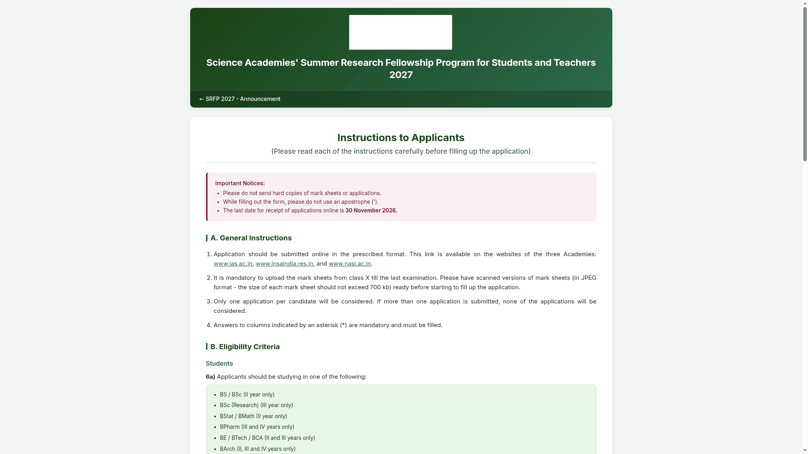

SRFP 2027: two months of research with Science Academies scientists
Want to work on a short research project with a scientist? The Indian Academy of Sciences, Bengaluru, Indian National Science Academy, New Delhi, and The National Academy of Sciences, India, Prayagraj invite applications for their Summer Research Fellowship Program (SRFP) 2027. Eligible students and college/university teachers studying or teaching in India can apply by Monday, 30 November 2026.
This guide is for the regular, India-wide SRFP. The separate Focus Area Science Technology Summer Fellowship (FAST-SF) 2027 is restricted to listed regions. Kerala is not on its institution-location list. Kerala students and teachers should assess the regular SRFP rules below, rather than assume the FAST-SF media headline applies to them.
What selected fellows receive
Selected applicants work with an assigned guide for two months during the 2027 calendar year, preferably in summer. The official announcement offers entitled round-trip train fare and a monthly fellowship to meet living expenses at the place of work.
The checked announcement does not state the monthly amount, travel class, payment schedule or a promise of free accommodation. We therefore do not advertise a rupee stipend or an all-expenses-paid stay. Selection is competitive and depends on the Academies and the guide's concurrence. Selection information is expected around March-April 2027, not immediately after applying.
Student courses and years
You must match both the course and the year in the official instructions. A course name alone is not enough:
- BS/BSc: second year only.
- BSc (Research): third year only.
- BStat/BMath: second year only.
- BPharm: third or fourth year.
- BE/BTech/BCA: second or third year.
- BArch: second, third or fourth year.
- MS/MSc/MVSc/MPharm: first year only.
- ME/MTech/MCA/MArch: first year only.
- MStat/MMath: first year only.
- The source groups five-year integrated MS/MSc/MTech/MBBS/BVSc under second, third or fourth years. Check the exact programme label in the live form if your course structure differs.
- PharmD: third or fourth year.
- Dual-degree BTech+MTech, BE+MSc or BS+MS: second, third or fourth year.
- Integrated PhD: first or second year, as expressly listed.
- MSc Tech: first or second year.
Students need an average of at least 65% in core subjects, excluding languages, from Class 10 through the examinations completed so far. Do not check only your current semester marks.
The rules separately say “PhD students are not eligible” while listing first/second-year Integrated PhD. Preserve that distinction. If your registration is an ordinary PhD, do not assume eligibility from the integrated-course line; if the category is unclear, ask the coordinator before submitting.
Teachers and other exclusions
Teacher applicants must teach in a college or university. The student 65% minimum does not apply to teachers. The announcement invites applications from universities and colleges affiliated to UGC/AICTE/MCI, accredited institutions and private universities.
Applicants who have already availed the Academies fellowship twice are not eligible. Only one application per candidate is allowed; if more than one is submitted, the instructions say none will be considered.
Prepare the files and write-up
- Both student and teacher applicants need scanned marksheets from Class 10 to their latest examination, in JPEG format. Each marksheet must not exceed 700 KB.
- Write about 150-250 words on your specific research interest and what you want to learn or achieve. A specific experiment or theory can be included. Do not copy a generic subject description or paste someone else's statement.
- Student applicants must provide the contact details/email of one present teacher familiar with their work. The Academy approaches the teacher for a recommendation in the prescribed format.
- Teacher applicants should upload publications, if any. On selection, they must post a Principal/HoD authorisation letter granting the necessary permission or leave to the SRFP coordinator.
The portal warns applicants not to use apostrophes or special/scientific characters such as Ø and Ü, because these can prevent uploading. Use plain text and follow the current form's instructions. Do not alter scientific meaning just to force a field through; ask for help if needed.
AiCoN preparation tip: ask the teacher in advance, draft your own statement offline, check each JPEG's size and legibility, and keep original records ready. These are preparation suggestions, not extra official eligibility requirements.
How to apply
- Read the regular SRFP 2027 announcement and instructions. Confirm the heading says Summer Research Fellowship Program, not FAST-SF.
- Check your course/year, core-subject average and previous fellowship history.
- Prepare your marksheets, specific-interest write-up and teacher contact details or publications, as applicable.
- At the bottom of the official instructions, choose “Click Here to Register”. During our check, this opened an initial page asking whether the applicant is a Student or Teacher, and one broad area of interest: Chemistry, Life Sciences, Mathematics, Earth & Planetary Sciences, Physics, or Engineering including Computer Science.
- Select your own truthful category and field, then continue through the official form. Review the live field requirements and any declarations before final submission. We did not select a hypothetical category or go through later personal-data/upload pages.
- Submit one complete application by 30 November 2026. Save the registration number assigned after online submission and quote it in later correspondence, as the announcement instructs.
The checked sources do not state an exact closing time. Do not assume 11:59 PM. The instructions say not to send hard copies of the initial application or marksheets. The selected-teacher permission letter is a separate later postal requirement, not a reason to mail the initial application.

Fees, privacy and decisions
No application fee is stated in the checked announcement or instructions. We did not complete later pages, so do not treat that as a guarantee about every later cost. Confirm living arrangements, travel entitlement and payment timing after an offer and before spending.
The Academies have sole discretion over selection. False information can cancel the fellowship and require repayment of fellowship/travel allowance already paid. Submit marksheets and contact details only through the official application. Do not give OTPs, documents or payments to someone promising guaranteed selection.
Official contact and video guide
Ms Jancy Ayyasamy, Scientist-G and Coordinator, Summer Research Fellowship Program, Indian Academy of Sciences, CV Raman Avenue, near Mekhri Circle, Sadashivanagar, Bengaluru 560080.
Email: jointsrf@ias.ac.in
Telephone: 080-22661206, 080-22661207, 080-22661208.
We could not verify a reliable current English or Malayalam video walkthrough for this specific 2027 form. Use the official written instructions rather than assuming an older summer-fellowship video has the same course-year rules.
What we verified
We checked the official regular SRFP announcement and instructions and compared the separate FAST-SF regional rules. In the live portal we opened the registration entry page and saw category/subject choices, without entering applicant data, choosing a subject, uploading documents or submitting an application. Later fields and submission confirmation were not tested.
Sources: SRFP announcement page, official announcement PDF, regular SRFP instructions and entry route, separate FAST-SF restrictions. Checked 15 November 2026. AiCoN explainer, not an Academy or government publication.